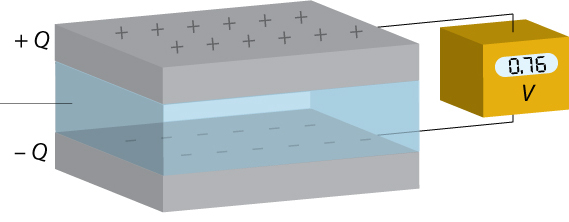

HardwareThe essential parts to know
Let’s get an idea of the basic components we’ll be using in our projects. Most are pretty straightforward, but take a look just in case to make sure your circuits won’t blow out!
Breadboards are the foundation of all your circuits. It’s where you’ll build pretty much everything you’re making, at least at first. We can connect wires by plugging them in instead of having to solder them together. The holes on the breadboard are connected to each other in rows in the center and columns on the outside (the long rails). Generally, the rails are used to connect to power and ground, and the middle rows are used for the actual components. All you have to do to connect things is push the wire into the breadboard, and it’ll work!
No matter which power source you’re using, whether an Arduino or a battery, make sure you’ve connected it to both power and ground on the breadboard. Just for safety reasons, it’s usually best to connect the battery last to avoid shorting anything midway through connecting your circuit. When choosing a battery, make sure you have enough voltage that your circuit works but not so much that it burns out your components. AA and AAA batteries are 1.5 volts; D batteries are 9 volts. Your Arduino can supply either 3.3 or 5 (we’ll usually use 5).
A quick note on circuit terminology: when there’s a gap in the connection, we say it’s an open circuit. When there’s a straight wire connecting power to ground without passing through any components, the circuit is shorted. In either of these conditions, your circuit won’t work correctly. If something isn’t working, check your connections!

Breadboard-144dpi by Waveguy (CC-BY-SA)
{kind=link}

Resistor Color Chart by Digikey
{kind=link}
Most circuits need a resistor so you don’t overload the components. Resistors dissipate energy and, according to Ohm’s Law, can lower the amount of current that’s flowing through a circuit. However, if your resistance is too high, the current will be so small that it won’t be able to do much of anything. Always check your resistor values before you start building! The colored bands on the resistors stand for different values – check the color code chart to see what they mean. In general, the first two bands are the number (like 10), the third band is the order of magnitude (like 10^3), and the fourth is the tolerance level, which means how close the actual value is to the reported value (like 5%). Resistors are the bread and butter of the electrical world!
When working with Arduino, you can either use a switch to cut off power directly or use it as digital input to make something else happen in the circuit. Switches are an open circuit until you press down the button and complete the circuit. If you’re using them as digital input, you’ll need a resistor; otherwise, you can get away without one, as long as the other components are hooked up right. For pushbutton switches, two are input and two are output. If you accidentally connect two of the same legs, it'll short the switch and act like a straight wire. Make sure you've connected the input and output legs correctly!

Tactile Switches by Scwerllguy (CC-BY-SA)
{kind=link}

Image by Q-Branch (CC-BY-NC-SA)
LED stands for Light Emitting Diode. They’re generally small, energy-efficient lightbulbs that come in a multitude of different colors. There are two essential things to remember about LEDs. First, always include a resistor when hooking them up in a circuit. LEDs will burn out if exposed to too much current, so if you don’t include a resistor, they’ll stop working. Check the current rating on your parts and use Ohm’s Law to determine the resistor value you need. Second, double-check to make sure you’ve put them in your circuit in the right direction. LEDs are diodes, which means they only allow current to flow in one direction, like a battery. In general, the long leg is the positive terminal, which means it needs to be on the side closer to the power source, and the short leg is negative, closer to ground. If your LED doesn’t turn on, you may have put it in the wrong way, creating an open circuit.
Most LEDs take digital input, on or off. RGB LEDs, however, take in analog values and use them to turn different colors. If yours is common cathode, it means you connect the long leg to ground; if it’s common anode, you connect the long leg to power. The other three legs each control one color: red, green, and blue. If you supply power to the blue leg and cut it off from red and green, your light will be all blue. If you supply power to all three at once, the LED will be white. You can also supply analog values and make it turn different colors, like orange or purple. Experiment to see what’s possible!
These displays have the same layout as the digits on a typical digital alarm clock. There are generally nine pins per digit: one for each segment, one for the decimal point, and one for either power or ground (power on common anode, ground on common cathode). Check your datasheet or just experiment to find out which pin corresponds to which segment. As you can imagine, it quickly gets annoying to plug in nine wires per digit, especially if you want to use more than one. To solve this problem, you can use LED driver chips like the Max7219 to do your work for you. Instead of needing nine pins on the Arduino, the Max7219 only needs three. This frees up your available pins and leaves you lots of room for other components.

7 Segment LED by Haragayato (CC-BY-SA)
{kind=link}
The simplest speaker we’ll be using is actually a piezoelectric buzzer, which is driven by an oscillating electric circuit (don’t worry if you don’t know what that means). A speaker requires analog input, or else it’ll just play one pitch, so you have to plug it into one of the PWM pins on your Arduino. You’ll use the tone library to output the correct frequency to the speaker so it plays the note you want. Like an LED, the speaker requires a resistor in series to work correctly.

Black Buzzer by MaodeColumbia (CC-BY-SA)
{kind=link}

Breadboard Potentiometer by bomazi (CC-BY-SA)
{kind=link}
A potentiometer is a variable resistor. The amount of resistance changes when you turn the knob. The actual values vary based on your potentiometer; a typical potentiometer might, for instance, be capable of providing between 0 and 10,000 ohms of resistance. Potentiometers have three terminals: one for input, one for output, and one for ground. If you wanted to vary the brightness of an LED, for instance, you’d connect power to the input terminal, output to the positive leg of the LED, and then ground to ground. You can also use a potentiometer for analog input on your Arduino.
This is another variable resistor, but instead of turning a switch, you change the value based on light. The darker the surrounding area, the higher the resistance. Light gives the electrons in the photoresistor enough energy to flow through the conducting area. Like the potentiometer, this can also be used as analog input. If you want a light to grow brighter when the room gets darker, for instance, you won’t be able to plug it in directly, or the resistance will decrease with increasing brightness. You’ll have to take in the value, do some calculations, and output the new value to your light. Photoresistors can also be used as primitive motion detectors if something passes above them, causing a temporary shadow.

Photoresistor by Analogauthority (Public Domain)
{kind=link}
Like we talked about in the electricity section, capacitors store energy. In a DC circuit where current is constant, capacitors act like an open circuit. If you have a circuit with AC and DC components, you can use capacitors to block the DC and only let the AC through (this is called a coupling capacitor). You can also use them to smooth out AC signals that are switching rapidly. Generally, we’ll use them to make our circuits more stable.

SMDCapacitors by Demoeconomist (Public Domain)
{kind=link}

(Add in later)
{kind=link}